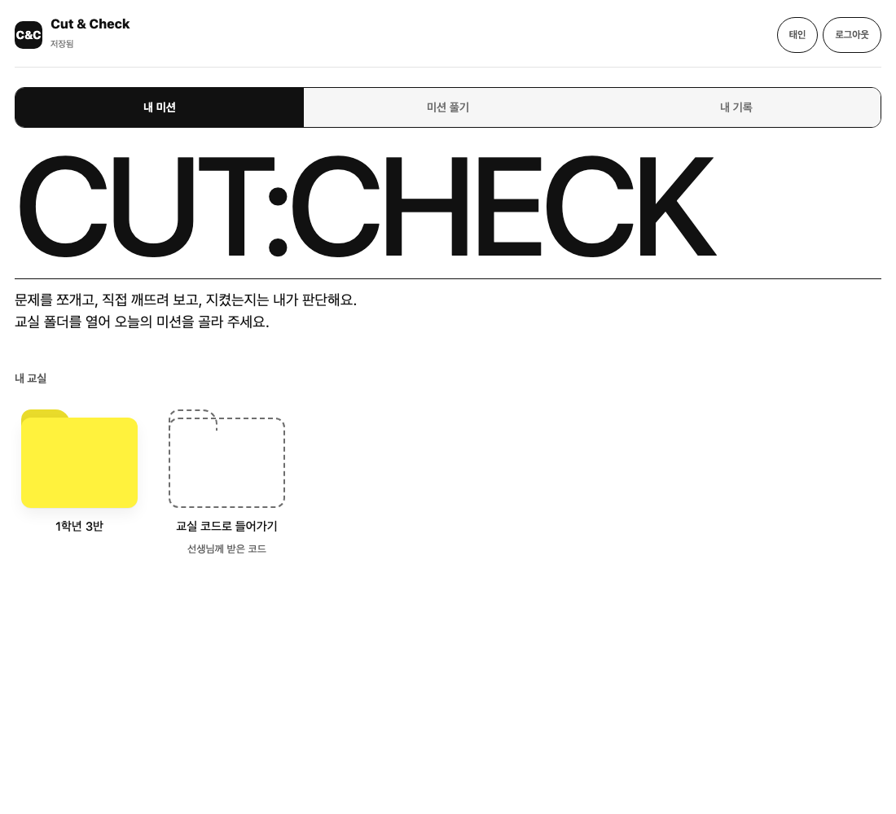
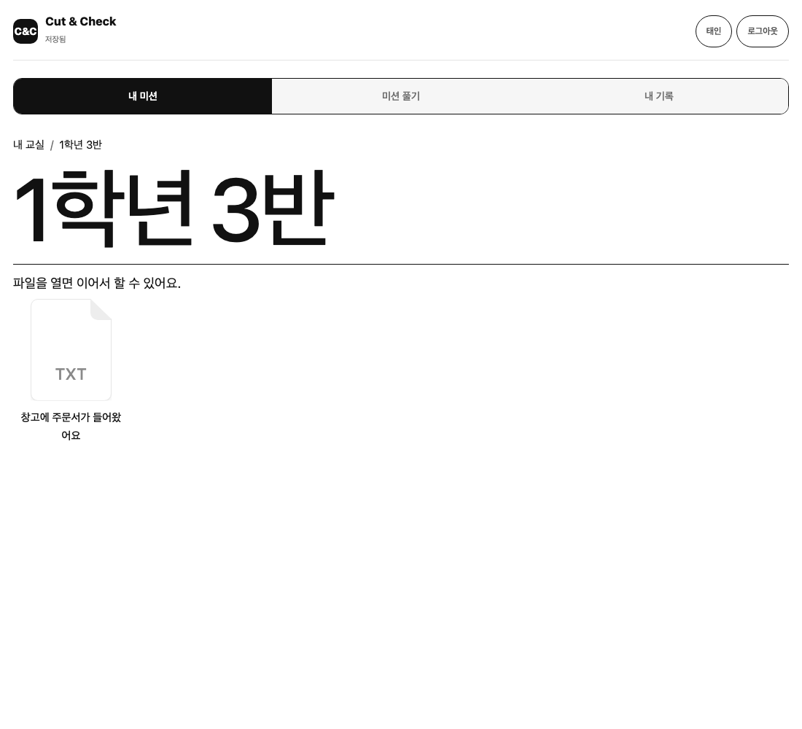
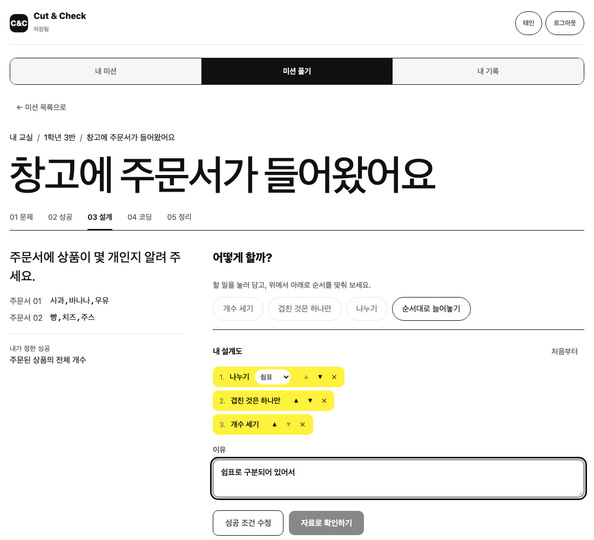
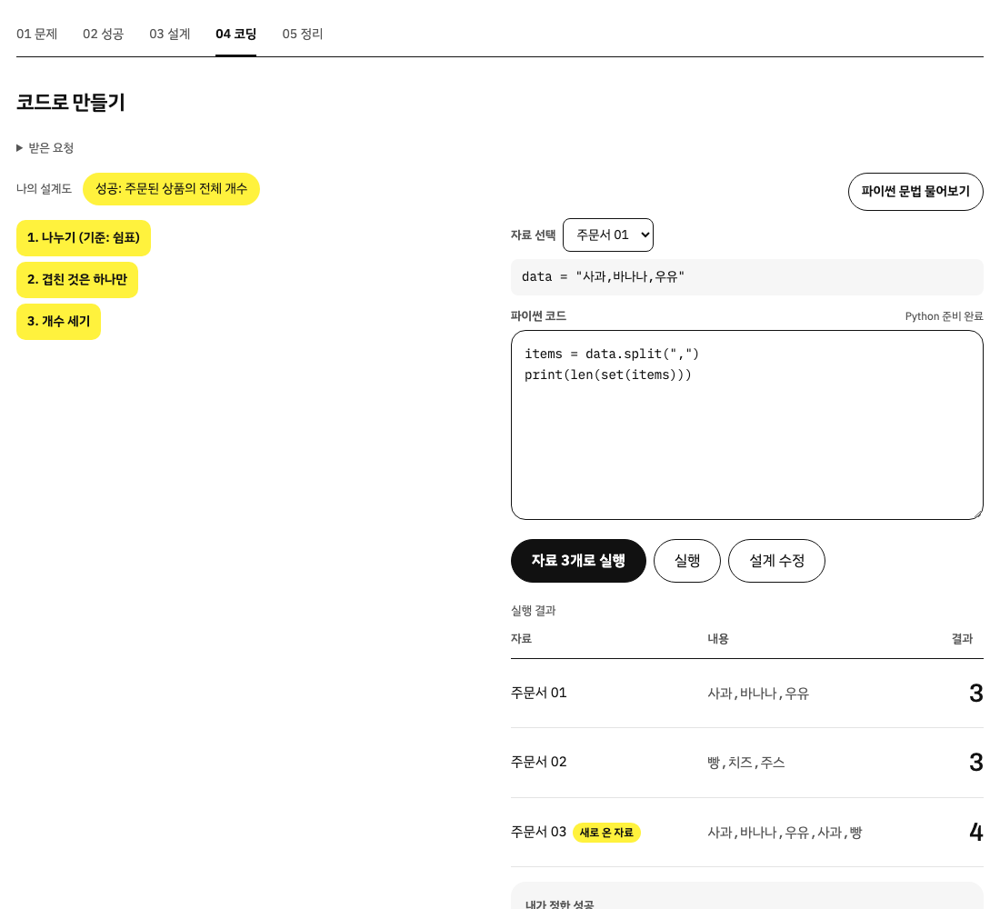
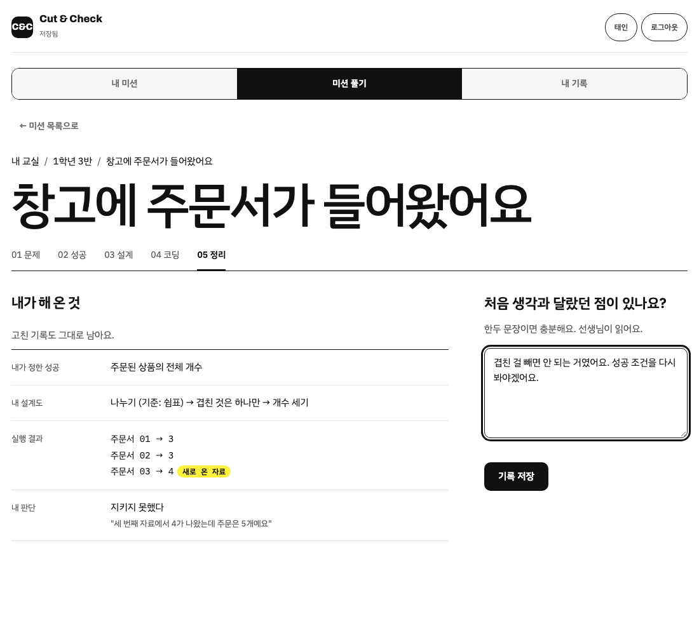
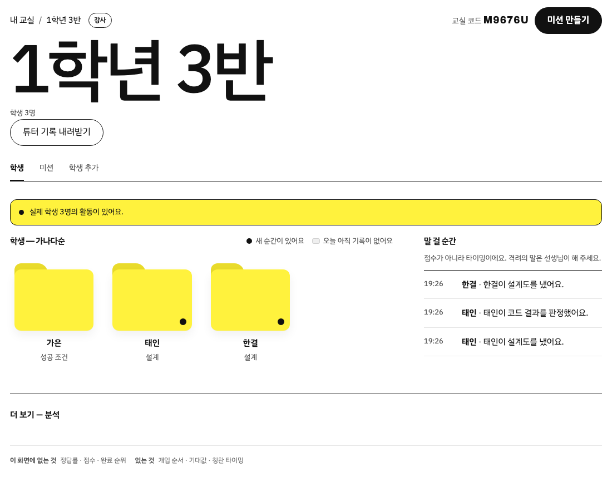
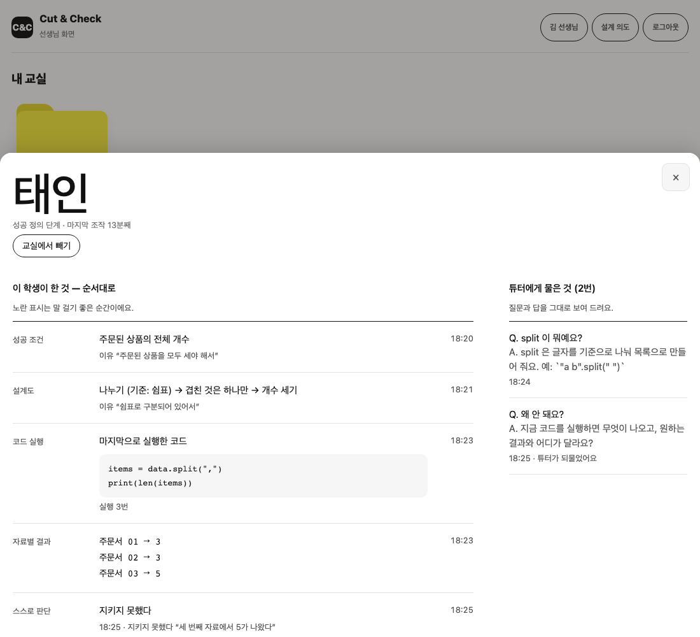
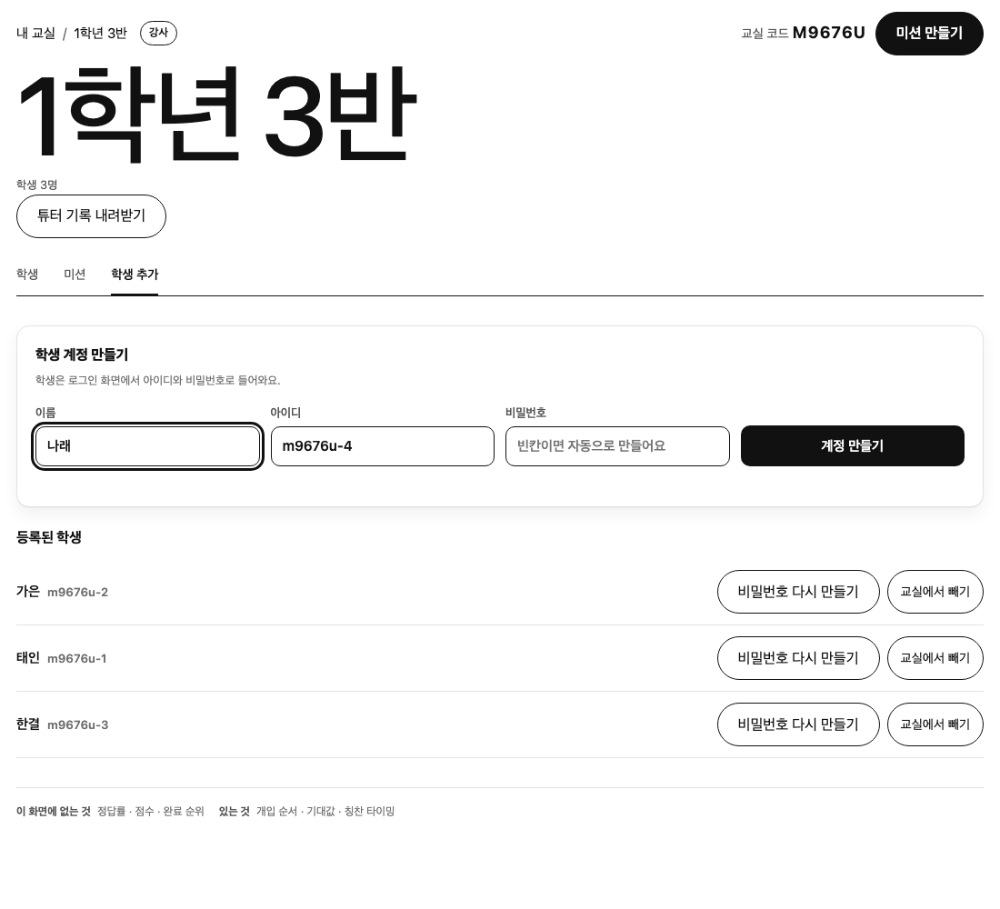

CUT:CHECK
시작은 대신해주고, 판단은 하나도 대신하지 않는다.
이 한 줄이 모든 기능의 기준입니다.
학생
교실은 폴더, 미션은 파일
선생님이 만들어 준 아이디로 들어오면 내 교실이 폴더로 보입니다. 열면 선생님이 확정한 미션이 파일로 놓여 있습니다. 옆자리가 어디까지 갔는지는 보이지 않습니다.


빈 화면 대신, 할 일 카드
코드부터 치지 않습니다. 할 일 카드를 담고 순서를 맞춰 설계도를 만듭니다. 필요 없는 카드도 섞여 있고, 순서를 채점하지 않습니다. 시작에서 막히지 않으니 판단에 집중할 수 있습니다.

세 번째 자료에서 결과가 달라집니다
설계도를 옆에 두고 파이썬 코드를 직접 씁니다. 같은 코드를 자료 3개에 돌려 결과를 나란히 봅니다. 마지막 자료는 처음 두 개와 다르게 생겼습니다. "왜 달라졌는지"는 학생 스스로 발견합니다.

"틀렸어요"라고 말하지 않습니다
결과를 보여주고, "내가 정한 성공 조건을 지켰는가"는 학생이 직접 판정합니다. 고친 기록까지 모아 보고 한두 문장으로 돌아봅니다. 그 문장은 선생님이 읽습니다.

강사
정답률 대신, 지금 누구부터 가야 하는가
학생은 가나다순 폴더로 보입니다. 화면을 연 뒤 생긴 일은 "말 걸 순간"에 사실만 쌓입니다. 점수·순위·소요 시간은 보여주지 않고, 무슨 말을 할지는 선생님이 정합니다.

한 학생이 한 것을 순서대로
성공 조건과 이유, 설계도, 마지막으로 실행한 코드, 자료별 결과, 스스로 내린 판단과 근거. 튜터에게 물은 것과 받은 답도 그대로 보입니다.

학생 계정은 선생님이 만듭니다
가입은 강사만 합니다. 교실에서 이름과 아이디를 적으면 계정이 생기고, 아이디와 비밀번호가 한 번 보입니다. 학생은 그 아이디로 들어옵니다.

수업 내용을 입력하면 미션 초안이 만들어집니다
오늘 배운 것과 핵심을 적으면 AI가 초안을 만듭니다. 선생님이 고쳐서 확정해야 학생에게 보입니다. 마지막 자료는 늘 처음 방법을 깨뜨리는 자료입니다.
의도적으로 만들지 않은 것
- 점수 · 레벨
- 칭찬을 기계에 넘기면 사람의 격려가 싸구려가 된다
- 정답 채점
- 채점하면 학생이 우리 답을 추측하기 시작한다
- AI 칭찬
- 타이밍만 알려주고 말은 선생님이 한다
- 정답률 · 순위
- 숫자를 띄우면 교사가 줄을 세운다
- 다음 행동 추천
- 판단 대행의 가장 흔한 형태
- 반 전체 현황
- 옆자리 진도가 보이면 속도 경쟁이 된다